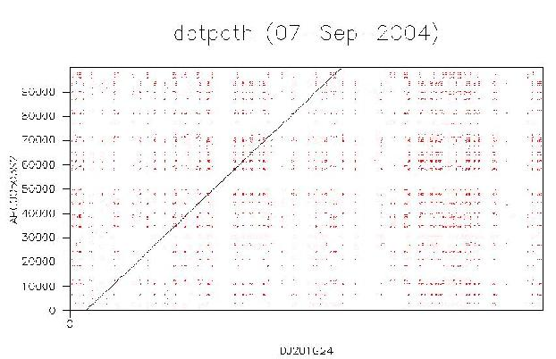
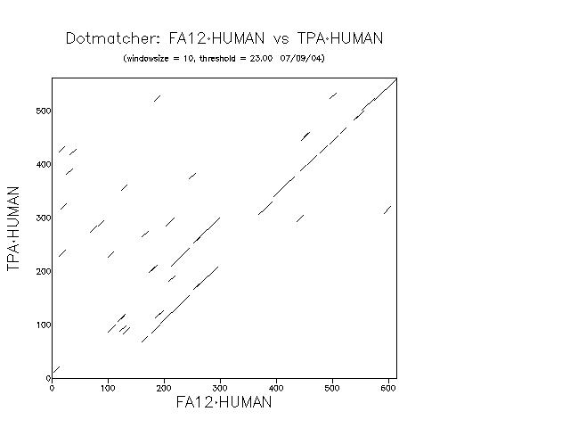

Abstract: In this section of the course, we will begin to look at various methods and approaches to sequence comparison. Sequence comparison is ubiquitous in modern molecular biology and bioinformatics. Sequences - genes and proteins - are compared in order to infer structural, functional and evolutionary relationships among the sequences being compared. The most common type of sequence comparison is sequence alignment which involves making an explicit mapping between the residues of two or more sequences.
This section will introduce you to pairwise alignments and various EMBOSS programs than can be used to do perform pairwise alignments. As the name suggests, pairwise alignment involves the alignment of two sequences of interest. The next section of the course will explore database similarity searches, which allow you to determine which sequence(s) are appropriate to use in such comparisons.
The standard way of using EMBOSS is via command line interaction on a UNIX computer system. You will be using EMBOSS on the system hatch.health.unm.edu and you should have received login information for xxx when you signed up for Biomed505. In addition to the command line interface, there are also several graphical interfaces to EMBOSS. One of these is EMBOSS-GUI, a web-based front end to EMBOSS. The exercises for the "Introduction to Sequence Analysis" section of Biomed505 are written for users of the command line interface. You may use EMBOSS-GUI if you prefer, however there are no detailed instructions to help you. A brief introduction to EMBOSS-GUI is available. For the most part, the input to the command line programs is exactly mirrored by EMBOSS-GUI's web browser forms and the use of EMBOSS-GUI should be fairly straight forward.
Questions you should answer as you work through the exercises are indicated by Question: tags, which also serve as hyperlinks to the corresponding answers (where available).
Typographical conventions:
Regular web links look like this
Input that you should enter verbatim in web page forms, or links/buttons you should click on web pages look like this
Sections representing command-line interaction are represented as in the following example:
[unix]# ls foo [Enter]
ls: foo: No such file or directory
where...
the unix propmt is represented as: [unix]# ,
characters in this font are commands to be typed into the computer verbatim,
characters in this font are names or identifiers (Eg. file/directory names or sequence accession numbers),
words in square brackets: [Ctrl] indicate a key to be pressed, and
program output is represented in this font
The above example means "at the UNIX prompt, type ls followed by foo (a directory name, which may be different in your case), then press Enter". The ouput of the command is supposed to be "ls: foo: No such file or directory". Output will often be truncated and this will be indicated using three horizontal or vertical dots.
| Background Questions |
| Before proceeding with the exercises, make sure you can answer the following questions related to the background reading. |
| Question: What is the difference between the local and global alignment strategies?
Question: Calculate the score of the DNA alignment given below using the following scoring rules" +1 for a match, -2 for a mismatch, -5 for opening a gap, and -0.5 for extending a gap.
GATCGGAGATGATTACCAGTA--GCGATG
||||||||||| ||||||||| ||||||
GATCGGAGATGCTTACCAGTACAGCGATG
|
| Sequences |
In the following exercises, you will be doing both DNA and protein alignments. Most of the command lines in the sections below pull the sequences directly from EMBOSS databases. If, however, you prefer to retrieve the sequences as files (or you are using EMBOSS-GUI), here are the accession numbers for the sequences we will be using. Note that you will need to retrieve the two genomic sequences using ENTREZ, as there is no genomic sequence database .
| Accession | EMBOSS USA | Description |
|---|
| AF129756 | N/A | Homo sapiens MSH55 gene, partial cds; and CLIC1, DDAH, G6b, G6c, G5b, G6d, G6e, G6f, BAT5, G5b, CSK2B, BAT4, G4, Apo M, BAT3, BAT2, AIF-1, 1C7, LST-1, LTB, TNF, and LTA genes, complete cds |
| AP000504 | nt:AP000504 | Homo sapiens genomic DNA, chromosome 6p21.3, HLA Class I region, section 3/20 |
| P00748 | sp:P00748 | Human coagulation factor XII precursor protein |
| P00750 | sp:P00750 | Human tissue-type plasminogen activator precursor protein |
| NM_003140 | rrefseq:NM_003140 | Human sex-determining region of Chr Y (Sry), mRNA |
| NM_011564 | rrefseq:NM_011564 | Mouse sex-determining region of Chr Y (Sry), mRNA |
| NP_003131 | nr:NP_003131 | Human sex-determining region Y protein |
| Q05738 | nr:Q05738 | Mouse sex-determining region Y protein |
|
| Dot-Matrix Representations of Pairwise Alignments |
| A dot-matrix representation, or dotplot, is a graphical representation of the regions of similarity between two sequences. Dotplots can be particularly useful in revealing complex relationships involving multiple regions of local similarity. The basic idea is to represent the sequences as the axes of a two-dimensional graph and then plot points of correspondence within the interior. A dot within the interior indicates that, in some small window, the similarity between the sequences is above some cutoff. Where extended stretches of similarity exist, the dots will merge to form diagonal lines. Examining the relative positions of the diagonals can highlight the modular structure of proteins. We will see an example of this in this section. While more sophisticated tools exist for finding regions of local alignment (see below), dot-matrix representations and the tools that produce them remain popular and useful. |
| 1. Use the dotpath program to generate a dotplot of large DNA sequences. |
| dotpath finds all matches of size -wordsize or greater between two sequences. It then reduces the matches found to the minimal set of long matches that do not overlap. This is a way of finding the (nearly) optimal path aligning two sequences. It is not the true optimal path as produced by the algorithms used in water or needle (which we will be using in the next section), but for very closely related sequences it will produce the same result and will work well with very long sequences. If you wish to compare the path found by dotpath to the set of all matches found, then the -overlaps command-line option will show all matches in red except for the matches in the minimal path which are shown in black, as normal. |
|
[unix]# dotpath -asequence AF129756.gb -bsequence AP000504.gb -wordsize 20 -overlaps -graph x11 [Enter]
This command will open an X Window containing a dotplot of the two sequences. The image should look like this:

This shows that the two sequences have a long stretch of similarity, plus many short repeats throughout.
Question: What happens if you decrease the wordsize to 10?
|
| 2. Use the dotmatcher program to generate a dotplot of protein sequences. |
| dotmatcher uses a threshold to define whether a match is plotted (calculated from the substitution matrix). A window of specified length is moved up all possible diagonals and a score is calculated within each window for each position along the diagonals. The score is the sum of the comparisons of the two sequences using the given similarity matrix along the window. If the score is above the threshold, then a line is plotted on the image over the position of the window. We will compare the human tissue plasminogen activator and coagulation factor XII proteins. |
|
[unix]# dotmatcher -asequence sp:P00748 -bsequence sp:P00750 -graph x11 [Enter]
This command will open an X Window containing a dotplot of the two sequences. The image should look like this:

Examine the dotplot carefully.
Question: How many domains are shared between the two proteins?
|
| Optimal Alignments of DNA Sequences |
| We are going to perform both global and local pairwise alignments of the human and mouse SRY mRNA sequences. |
| 1. Use the needle program to perform a global alignment. |
|
[unix]# needle -asequence rrefseq:NM_003140 -bsequence rrefseq:NM_011564 -gapopen 10 -gapextend 0.5 -outfile SRYrna.needle [Enter]
Examine the contents of the output file:
[unix]# cat SRYrna.needle [Enter]
########################################
# Program: needle
# Rundate: Fri Sep 03 10:03:30 2004
# Align_format: srspair
# Report_file: SRYrna.needle
########################################
#=======================================
#
# Aligned_sequences: 2
# 1: NM_003140
# 2: NM_011564
# Matrix: EDNAFULL
# Gap_penalty: 10.0
# Extend_penalty: 0.5
#
# Length: 1581
# Identity: 390/1581 (24.7%)
# Similarity: 390/1581 (24.7%)
# Gaps: 1077/1581 (68.1%)
# Score: 1071.0
#
#
#=======================================
NM_003140 1 gttgagggggtgttgagggcggagaaatgcaagtttcattacaaaagtta 50
NM_011564 1 0
NM_003140 51 acgtaacaaagaatctggtagaagtgagttttggatagtaaaataagttt 100
NM_011564 1 0
NM_003140 101 cgaactctggcacctttcaattttgtcgcactctccttgtttttgacaat 150
NM_011564 1 0
NM_003140 151 gcaatcatatgcttctgctatgttaagcgtattcaacagcgatgattaca 200
NM_011564 1 0
NM_003140 201 gtccagctgtgcaagagaatattcccgctctccggagaagctcttccttc 250
NM_011564 1 0
NM_003140 251 ctttgcactgaaagctgtaactctaagtatcagtgtgaaacgggagaaaa 300
|| ||||
NM_011564 1 at------------ggag---- 6
NM_003140 301 cagtaaaggcaacgtccaggatagagtgaagcgacccatgaacgcattca 350
|||.|.||| |||||.||||||||.|||||.|
NM_011564 7 -------ggccatgtc------------aagcgccccatgaatgcattta 37
NM_003140 351 tcgtgtggtctcgcgatcagaggcgcaagatggctctag-agaatcccag 399
|.||||||||.||.|.|.||||||.||||.|||| |.|| ||||||||||
NM_011564 38 tggtgtggtcccgtggtgagaggcacaagttggc-ccagcagaatcccag 86
NM_003140 400 aatgcgaaactcagagatcagcaagcagctgggataccagtggaaaatgc 449
.||||.|||..||||||||||||||||||||||||.|..||||||||..|
NM_011564 87 catgcaaaatacagagatcagcaagcagctgggatgcaggtggaaaagcc 136
NM_003140 450 ttactgaagccgaaaaatggccattcttccaggaggcacagaaattacag 499
||||.||||||||||||.||||.||.||||||||||||||||.|||..||
NM_011564 137 ttacagaagccgaaaaaaggccctttttccaggaggcacagagattgaag 186
NM_003140 500 gccatgcacagagagaaatacccgaattataagtatcgacctcgtcggaa 549
..|.|.|||||||||||||||||.||.|||||.||||..||||.|||||.
NM_011564 187 atcctacacagagagaaatacccaaactataaatatcagcctcatcggag 236
NM_003140 550 ggcgaagatgctgccgaagaattgcagtttgcttcccgcagatcccgc-- 597
|||.||..||...|.||.||.|.|||.|||.|..||.||||.|.||.|
NM_011564 237 ggctaaagtgtcacagaggagtggcattttacagcctgcagttgcctcaa 286
NM_003140 598 ---ttcggtac-----tctgcagcgaagtgcaactgga--caacaggttg 637
..|.|||| ||||| ||||..||.||| |.||| ||
NM_011564 287 caaaactgtacaaccttctgc-----agtgggacaggaacccaca---tg 328
NM_003140 638 --------tacagggatgactgtacgaaagc--cacac----actcaaga 673
||||||.|.|||||.|..|.||| ||||| ||||.|.|
NM_011564 329 ccatcacatacaggcaagactggagtagagctgcacacctgtactccaaa 378
NM_003140 674 atggagcaccagcta---------------------------------gg 690
| ||||||.| ||
NM_011564 379 a------accagcaaagcttttattggcagcctgttgatatccccactgg 422
NM_003140 691 ccacttaccgc-------ccatcaac-gcagc--cagc------------ 718
.|||.|.|.|| .||.||.| ||||| ||||
NM_011564 423 gcacctgcagcagcagcagcagcagcagcagcagcagcagttccataacc 472
NM_003140 719 -tcacc-gcagcaacgg---------gaccgcta-cagccactggacaaa 756
.|||| ||||||||.| ||||.|.| |||| |
NM_011564 473 accaccagcagcaacagcagttctatgaccaccaccagc----------a 512
NM_003140 757 gctgtaggacaatcgg--gtaacattggc--tacaaagacctacc----- 797
||.|.||.|..|.|.| |.|.||...|| |.|.|.|||| |||
NM_011564 513 gcagcagcagcagcagcagcagcagcagcagttccatgacc-accaccag 561
NM_003140 798 tagatgc-tcctttttacgataacttacagccctcactttcttatgttta 846
.|||.|| .|..|||.|.||..||...|||| |
NM_011564 562 cagaagcagcagtttcatgaccaccaccagc------------------a 593
NM_003140 847 gtttcaatattgttttcttttctctggctaataaaggccttattcatttc 896
| |||.| || || ||.|
NM_011564 594 g---caaca-----------------gc------ag----------ttcc 607
NM_003140 897 a 897
|
NM_011564 608 atgaccaccaccaccaccaccaggagcagcagttccatgaccaccaccag 657
NM_003140 898 897
NM_011564 658 cagcaacagcagttccatgaccaccagcagcagcagcagcagcagcagca 707
NM_003140 898 897
NM_011564 708 gcagcagttccatgaccaccaccagcagaagcagcagttccatgaccacc 757
NM_003140 898 897
NM_011564 758 accaccaccaacagcagcagcagttccatgaccaccagcagcagcagcag 807
NM_003140 898 897
NM_011564 808 cagttccatgaccaccagcagcagcagcatcagttccatgaccaccccca 857
NM_003140 898 897
NM_011564 858 gcagaagcagcagttccatgaccacccccagcagcaacagcagttccatg 907
NM_003140 898 897
NM_011564 908 accaccaccaccagcagcagcagaagcagcagttccatgaccaccaccag 957
NM_003140 898 897
NM_011564 958 cagaagcagcagttccatgaccaccaccagcagaagcagcagttccatga 1007
NM_003140 898 897
NM_011564 1008 ccaccaccagcagcaacagcagttccatgaccaccaccagcagcagcagc 1057
NM_003140 898 897
NM_011564 1058 agcagcagcagcagcagcagcagcagttccacgaccagcagcttacctac 1107
NM_003140 898 897
NM_011564 1108 ttactaacagctgacatcactggtgagcatacaccataccaggagcacct 1157
NM_003140 898 897
NM_011564 1158 cagcacagccctgtggttggcagtctcatga 1188
#---------------------------------------
#---------------------------------------
Question: What is the effect of increasing the gap penalty parameters to "-gapopen 20 -gapextend 2"?
|
| 2. Use the water program to perform a local alignment. |
|
[unix]# water -asequence rrefseq:NM_003140 -bsequence rrefseq:NM_011564 -gapopen 10 -gapextend 0.5 -outfile SRYrna.water [Enter]
Examine the contents of the output file:
[unix]# cat SRYrna.water [Enter]
########################################
# Program: water
# Rundate: Fri Sep 03 10:03:47 2004
# Align_format: srspair
# Report_file: SRYrna.water
########################################
#=======================================
#
# Aligned_sequences: 2
# 1: NM_003140
# 2: NM_011564
# Matrix: EDNAFULL
# Gap_penalty: 10.0
# Extend_penalty: 0.5
#
# Length: 659
# Identity: 383/659 (58.1%)
# Similarity: 383/659 (58.1%)
# Gaps: 160/659 (24.3%)
# Score: 1095.5
#
#
#=======================================
NM_003140 293 ggagaaaacagtaaaggcaacgtccaggatagagtgaagcgacccatgaa 342
|||| |||.|.||| |||||.||||||||
NM_011564 3 ggag-----------ggccatgtc------------aagcgccccatgaa 29
NM_003140 343 cgcattcatcgtgtggtctcgcgatcagaggcgcaagatggctctag-ag 391
.|||||.||.||||||||.||.|.|.||||||.||||.|||| |.|| ||
NM_011564 30 tgcatttatggtgtggtcccgtggtgagaggcacaagttggc-ccagcag 78
NM_003140 392 aatcccagaatgcgaaactcagagatcagcaagcagctgggataccagtg 441
||||||||.||||.|||..||||||||||||||||||||||||.|..|||
NM_011564 79 aatcccagcatgcaaaatacagagatcagcaagcagctgggatgcaggtg 128
NM_003140 442 gaaaatgcttactgaagccgaaaaatggccattcttccaggaggcacaga 491
|||||..|||||.||||||||||||.||||.||.||||||||||||||||
NM_011564 129 gaaaagccttacagaagccgaaaaaaggccctttttccaggaggcacaga 178
NM_003140 492 aattacaggccatgcacagagagaaatacccgaattataagtatcgacct 541
.|||..||..|.|.|||||||||||||||||.||.|||||.||||..|||
NM_011564 179 gattgaagatcctacacagagagaaatacccaaactataaatatcagcct 228
NM_003140 542 cgtcggaaggcgaagatgctgccgaagaattgcagtttgcttcccgcaga 591
|.|||||.|||.||..||...|.||.||.|.|||.|||.|..||.||||.
NM_011564 229 catcggagggctaaagtgtcacagaggagtggcattttacagcctgcagt 278
NM_003140 592 tcccgc-----ttcggtac-----tctgcagcgaagtgcaactgga--ca 629
|.||.| ..|.|||| ||||| ||||..||.||| |.
NM_011564 279 tgcctcaacaaaactgtacaaccttctgc-----agtgggacaggaaccc 323
NM_003140 630 acaggttg--------tacagggatgactgtacgaaagc--cacac---- 665
||| || ||||||.|.|||||.|..|.||| |||||
NM_011564 324 aca---tgccatcacatacaggcaagactggagtagagctgcacacctgt 370
NM_003140 666 actcaagaatggagcaccagcta--------------------------- 688
||||.|.|| ||||||.|
NM_011564 371 actccaaaa------accagcaaagcttttattggcagcctgttgatatc 414
NM_003140 689 ------ggccacttaccgc-------ccatcaac-gcagc--cagc---- 718
||.|||.|.|.|| .||.||.| ||||| ||||
NM_011564 415 cccactgggcacctgcagcagcagcagcagcagcagcagcagcagcagtt 464
NM_003140 719 ---------tcacc-gcagcaacgg---------gaccgcta-cagccac 748
.|||| ||||||||.| ||||.|.| ||||
NM_011564 465 ccataaccaccaccagcagcaacagcagttctatgaccaccaccagc--- 511
NM_003140 749 tggacaaagctgtaggacaatcgg--gtaacattggc--tacaaagacct 794
|||.|.||.|..|.|.| |.|.||...|| |.|.|.||||
NM_011564 512 -------agcagcagcagcagcagcagcagcagcagcagttccatgacc- 553
NM_003140 795 acc-----tagatgctccttttt----acgataacttacagc--cctcac 833
||| .|||.||..|..||| ||.|..||...|||| |..||.
NM_011564 554 accaccagcagaagcagcagtttcatgaccaccaccagcagcaacagcag 603
NM_003140 834 tttcttatg 842
||.| |||
NM_011564 604 ttcc--atg 610
#---------------------------------------
#---------------------------------------
Question: What happens to the alignment statistics (%Identity, %Similarity, and Score) when you increase water's gap extension score to "1.0"?
|
| Optimal Alignments of Protein Sequences |
| We are going to perform both global and local pairwise alignments of the human and mouse SRY protein sequence. |
| 1. Use the needle program to perform a global alignment. |
|
[unix]# needle -asequence nr:NP_003131 -bsequence nr:Q05738 -gapopen 10 -gapextend 0.5 -outfile SRYprot.needle [Enter]
Examine the contents of the output file:
[unix]# cat SRYprot.needle [Enter]
########################################
# Program: needle
# Rundate: Fri Sep 03 10:06:38 2004
# Align_format: srspair
# Report_file: SRYprot.needle
########################################
#=======================================
#
# Aligned_sequences: 2
# 1: NP_003131.1
# 2: SRY_MOUSE
# Matrix: EBLOSUM62
# Gap_penalty: 10.0
# Extend_penalty: 0.5
#
# Length: 452
# Identity: 74/452 (16.4%)
# Similarity: 103/452 (22.8%)
# Gaps: 305/452 (67.5%)
# Score: 353.0
#
#
#=======================================
NP_003131.1 1 MQSYASAMLSVFNSDDYSPAVQENIPALRRSSSFLCTESCNSKYQCETGE 50
SRY_MOUSE 1 0
NP_003131.1 51 NSKGNVQDRVKRPMNAFIVWSRDQRRKMALENPRMRNSEISKQLGYQWKM 100
::..||||||||:||||.:|.|:|.:||.|:|:|||||||.:||.
SRY_MOUSE 1 MEGHVKRPMNAFMVWSRGERHKLAQQNPSMQNTEISKQLGCRWKS 45
NP_003131.1 101 LTEAEKWPFFQEAQKLQAMHREKYPNYKYRPRRKAKMLPKNCSLLPADPA 150
||||||.|||||||:|:.:||||||||||:|.|:||:..::..|.||..:
SRY_MOUSE 46 LTEAEKRPFFQEAQRLKILHREKYPNYKYQPHRRAKVSQRSGILQPAVAS 95
NP_003131.1 151 SVLCSEVQLDNR----LYRDDCTKATHSRMEHQ-----------LGHLPP 185
:.|.:.:|.|.. .||.|.::|.|...::| .|||.
SRY_MOUSE 96 TKLYNLLQWDRNPHAITYRQDWSRAAHLYSKNQQSFYWQPVDIPTGHLQ- 144
NP_003131.1 186 INAASSPQQRDRYSHWTKL 204
......||:..::|..:.
SRY_MOUSE 145 -QQQQQQQQQQFHNHHQQQQQFYDHHQQQQQQQQQQQQFHDHHQQKQQFH 193
NP_003131.1 205 204
SRY_MOUSE 194 DHHQQQQQFHDHHHHHQEQQFHDHHQQQQQFHDHQQQQQQQQQQQFHDHH 243
NP_003131.1 205 204
SRY_MOUSE 244 QQKQQFHDHHHHQQQQQFHDHQQQQQQFHDHQQQQHQFHDHPQQKQQFHD 293
NP_003131.1 205 204
SRY_MOUSE 294 HPQQQQQFHDHHHQQQQKQQFHDHHQQKQQFHDHHQQKQQFHDHHQQQQQ 343
NP_003131.1 205 204
SRY_MOUSE 344 FHDHHQQQQQQQQQQQQQFHDQQLTYLLTADITGEHTPYQEHLSTALWLA 393
NP_003131.1 205 204
SRY_MOUSE 394 VS 395
#---------------------------------------
#---------------------------------------
Question: What is the default substitution matrix used by needle when aligning protein sequences?
|
| 2. Use the water program to perform a local alignment. |
|
[unix]# water -asequence nr:NP_003131 -bsequence nr:Q05738 -gapopen 10 -gapextend 0.5 -outfile SRYprot.water [Enter]
Examine the contents of the output file:
[unix]# cat SRYprot.water [Enter]
########################################
# Program: water
# Rundate: Fri Sep 03 10:06:45 2004
# Align_format: srspair
# Report_file: SRYprot.water
########################################
#=======================================
#
# Aligned_sequences: 2
# 1: NP_003131.1
# 2: SRY_MOUSE
# Matrix: EBLOSUM62
# Gap_penalty: 10.0
# Extend_penalty: 0.5
#
# Length: 160
# Identity: 74/160 (46.2%)
# Similarity: 102/160 (63.8%)
# Gaps: 17/160 (10.6%)
# Score: 357.0
#
#
#=======================================
NP_003131.1 56 VQDRVKRPMNAFIVWSRDQRRKMALENPRMRNSEISKQLGYQWKMLTEAE 105
::..||||||||:||||.:|.|:|.:||.|:|:|||||||.:||.|||||
SRY_MOUSE 1 MEGHVKRPMNAFMVWSRGERHKLAQQNPSMQNTEISKQLGCRWKSLTEAE 50
NP_003131.1 106 KWPFFQEAQKLQAMHREKYPNYKYRPRRKAKMLPKNCSLLPADPASVLCS 155
|.|||||||:|:.:||||||||||:|.|:||:..::..|.||..::.|.:
SRY_MOUSE 51 KRPFFQEAQRLKILHREKYPNYKYQPHRRAKVSQRSGILQPAVASTKLYN 100
NP_003131.1 156 EVQLDNR----LYRDDCTKATHSRMEHQ-----------LGHLPPINAAS 190
.:|.|.. .||.|.::|.|...::| .|||. ....
SRY_MOUSE 101 LLQWDRNPHAITYRQDWSRAAHLYSKNQQSFYWQPVDIPTGHLQ--QQQQ 148
NP_003131.1 191 SPQQRDRYSH 200
..||:..::|
SRY_MOUSE 149 QQQQQQFHNH 158
#---------------------------------------
#---------------------------------------
Question: What is the effect of changing the substitution matrix used by water to EBLOSUM85?
Question: What is the effect of changing the substitution matrix used by water to EBLOSUM40?
|